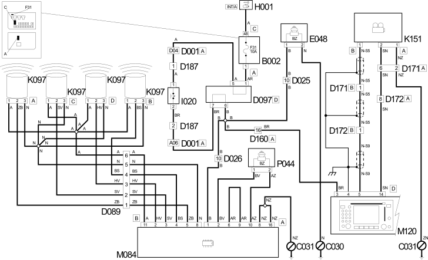

E3090 PARKING SENSORS OPERATIONAL DESCRIPTION
- Path
- Electrical equipment > 1 ELECTRICAL FUNCTIONS > E30 ELECTRICALLY ACTIVATED DEVICES > E3090 PARKING SENSOR > E3090 PARKING SENSORS OPERATIONAL DESCRIPTION
- Kind
- functional description (how the circuit works)
- Applies to
- all engines; all production periods
- Interactive page
- https://sloeber94.github.io/elrnDB-fDct/en/#/244001799
Applies to: all engines; all production periods
Operational Description
When reverse is engaged, switch I020 carries the power supply provided by underfacia junction unit B002 to short-circuit junction D097D - pin 7 -.The same junction distributes power to parking sensor control unit M184, Connect M120 and acoustic signal E048.
Connect M120 receives the reverse engaged signal - pin 3 connector D - and supplies rear TV camera K151 - pin 14 connector D. It then processes a signal from the TV camera - pin 5 connector D - before showing it on the display.
Parking control unit M084 is fitted with the folloing connections:
- pin 11 : power supply to parking sensor unit K097;
- pin 8 : earth for parking sensor unit K097;
- pin 2 : right central sensor signal input;
- pin 3 : left central sensor signal input;
- pin 4 : left outer sensor signal input;
- pin 5 : right outer sensor signal input;
Connector B:
Connector A:
- pin 1 : ignition-operated power supply;
- pin 2, 10: management of acoustic signal P044;
- pin 8, 16: earth connection C031.
